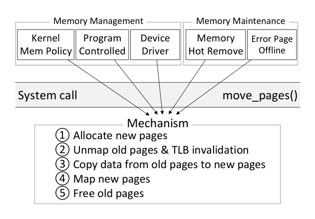
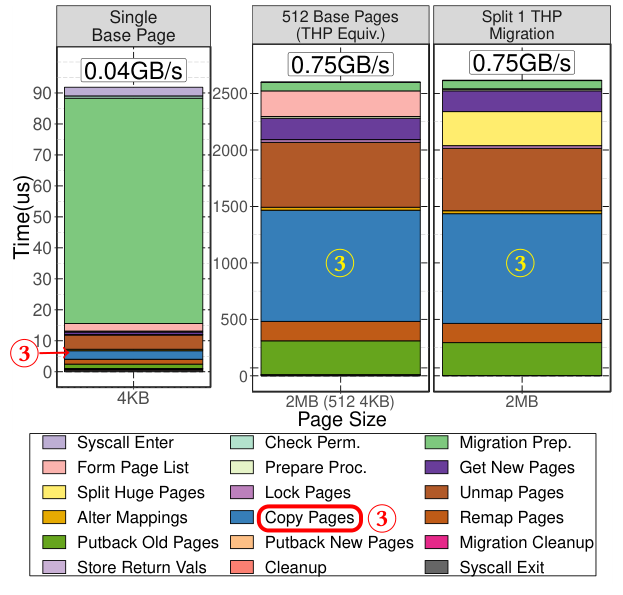
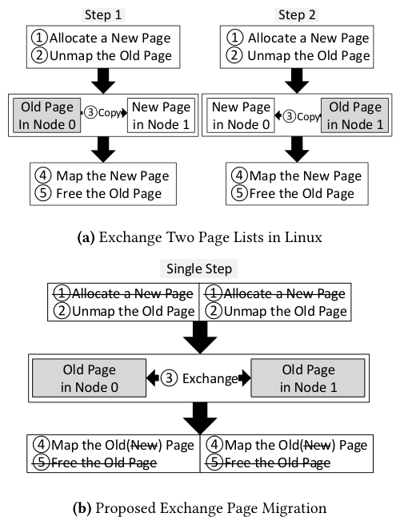
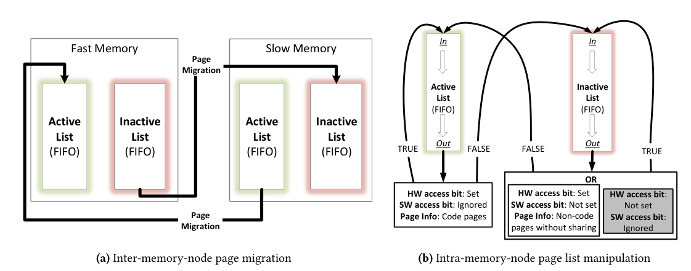
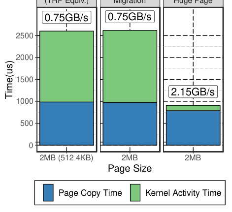
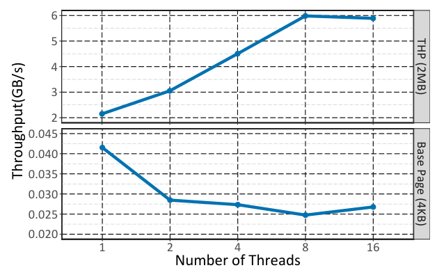
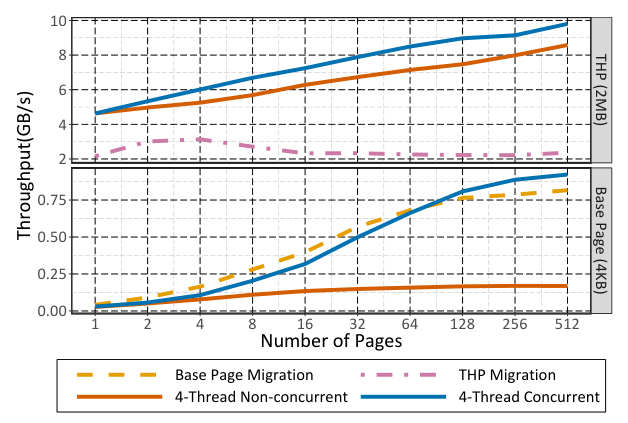
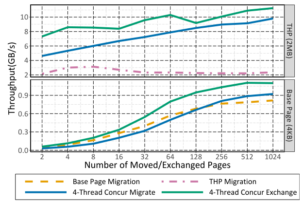
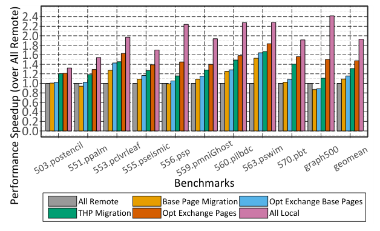
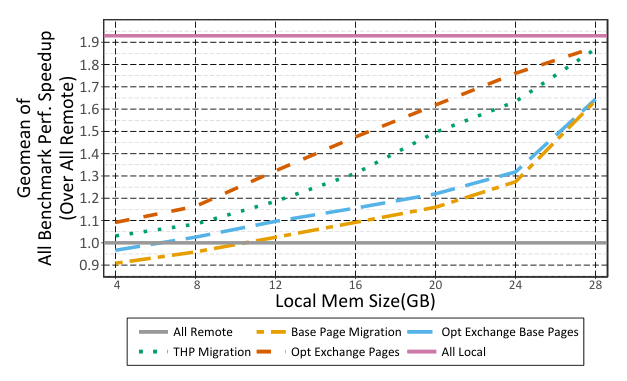

Nimble Page Management for Tiered Memory Systems
This page was written by an AI model to give a high-level overview of the paper. Please check the paper for detail: ACM Digital Library.
Future servers will mix memory technologies with different latency, bandwidth, and capacity: high-bandwidth memory next to DDR, non-volatile 3D XPoint, and disaggregated memory reached over an interconnect. Software can only exploit this heterogeneity if the OS can cheaply move hot pages into the fastest tier and cold pages out. The paper measures how far Linux is from that goal: migrating pages between two NUMA nodes at kernel-reported hardware bandwidth of 19.2 GB/s achieves only 40 MB/s of effective throughput for single base pages, and 750 MB/s for a batch matching one transparent huge page (THP) size, up to 95% under-utilization of the link.
The paper traces this to the migration mechanism, not the placement policy. Prior tiered-memory work (autoNUMA, Thermostat, HeteroOS) focuses on deciding which pages to move, and either profiles accesses by offlining pages or sampling page faults, or assumes the underlying move_pages() path is already fast. A cost-breakdown experiment shows the opposite: for a single 4 KB migration, almost all of the time goes to kernel bookkeeping (syscall entry, permission checks, page-list formation, locking, mapping updates, cleanup) and only a small sliver to the actual data copy.
The key idea is to separate migration policy from migration mechanism explicitly, keep the policy minimal and reuse existing OS structures, and instead spend the engineering effort on making the mechanism itself fast. The paper identifies four mechanism-level gaps: Linux cannot migrate THPs natively (it splits a 2 MB page into 512 base pages first), page copies are single-threaded, multiple pages in one move_pages() call are migrated one at a time instead of together, and inserting a hot page into a capacity-limited fast tier requires a separate allocation and copy for the cold page being evicted even though the two operations are symmetric.
The fix is four complementary kernel changes: native THP migration (migrate a 2 MB page as one unit), multi-threaded parallel copying within one migration, concurrent batching of multiple page migrations into one logical step, and a new exchange_pages() syscall that swaps two equal-sized page lists in place without allocating or freeing pages. On top, the paper reuses Linux's existing active/inactive page lists, with one change: pages that fall off the fast memory's inactive list are migrated to slow memory instead of being reclaimed, and vice versa for slow memory's active list.
Combined, the four mechanism optimizations improve raw page migration throughput by over 15x on the paper's Intel Xeon testbed (and by 21.7x on IBM Power8). On a disaggregated-memory emulation with SpecACCEL and graph500 workloads, the full system improves end-to-end application performance by 40% on average over Linux's default THP-splitting migration, reaching 77% of the performance of an all-fast-memory configuration while using only 16 GB of fast memory for a 32 GB footprint.

Key takeaways
- Linux's page migration mechanism, not the placement policy, is the bottleneck: measured throughput is 40-750 MB/s against 19.2 GB/s of available hardware bandwidth, mostly spent in kernel bookkeeping rather than copying data.
- The paper separates migration policy (which pages move) from migration mechanism (how a move happens), both exposed through the same move_pages()-style interface, so any policy automatically inherits the mechanism speedups.
- Four mechanism optimizations: native THP migration, multi-threaded data copy, concurrent multi-page migration, and a new exchange_pages() syscall that swaps two equal-sized page lists without allocating or freeing pages.
- The placement policy reuses Linux's existing active/inactive page lists with one change: pages aging off the fast tier's inactive list migrate to slow memory, and vice versa, adding no extra profiling overhead.
- Net effect: over 15x higher raw migration throughput on x86 (21.7x on Power), and a 40% average application speedup on a disaggregated-memory testbed with SpecACCEL and graph500, reaching 77% of an all-fast-memory upper bound.
From a 40 MB/s syscall to a 15x faster migration path
What makes Linux's page migration slow, the four mechanism fixes in dependency order, and the low-overhead placement policy built on top.
1 · Background: tiered and disaggregated memory
Heterogeneous memory systems pair a small, fast tier (high-bandwidth memory, a near memory node) with a large, slower tier (DDR, non-volatile memory, or memory reached over a network as disaggregated memory). The OS exposes each tier as a NUMA node and must decide, and physically carry out, which pages live where. Linux already does this across NUMA sockets with autoNUMA, but autoNUMA profiles access by periodically offlining pages, which causes unpredictable latency, and it falls back to swapping to disk when the fast node is full, which is exactly the capacity-limited situation a tiered system is normally in.
2 · Where the time actually goes

The paper instruments move_pages() on an Intel Xeon dual-socket system (the two sockets stand in for a fast/slow memory pair). Migrating one 4 KB page costs almost entirely kernel overhead (syscall entry, permission checks, migration prep, forming the page list, locking and unmapping, remapping, cleanup) with only a thin sliver spent on the data copy itself, yielding 40 MB/s. Migrating 512 base pages (the data of one 2 MB THP) one at a time scales this up to only 750 MB/s. Splitting one 2 MB THP into 512 base pages before migrating them costs the same as the 512-base-page case plus the split itself, so THPs give almost no migration benefit under Linux's current implementation.
3 · Fix 1: migrate THPs natively
Linux's THP migration support predates THPs: the migration code was built for memory hotplug and only ever moved base pages, so today a THP is first split into 512 base pages and each is migrated separately. The paper extends the five migration steps (allocate, unmap, copy, map, free) to operate on a whole 2 MB THP at once, and makes this path reachable from mbind, move_pages, memory hot-removal, and cpuset/cgroup requests, which previously always forced a split. This collapses 512 sets of per-page overhead into one, independent of the other three optimizations.
4 · Fix 2: parallelize the data copy
With per-page overhead no longer the dominant cost for large transfers, the data copy itself becomes worth speeding up. The paper adds a variable-thread-count copy path using kernel workqueues, exposed through sysfs and a new MPOL_MF_MT flag to move_pages(), so a policy can choose the thread count per migration. Parallel copying only pays off once there is enough data to amortize thread launch cost, which is why it matters for 2 MB THPs but not for single 4 KB pages.
5 · Fix 3: migrate many pages concurrently
move_pages() already accepts a list of pages, but Linux migrates them one at a time with an implicit barrier between each. The paper instead allocates, unmaps, copies, and remaps all pages in the list as one aggregated batch, distributing the copy work across per-CPU workqueues, and uses extra copy threads to parallelize a single page's copy if there are more threads than pages in the batch. This removes the Amdahl's-law bottleneck that persists even after THPs and parallel copy, because architectures only support a limited set of page sizes.
6 · Fix 4: exchange pages instead of migrating twice

Inserting a hot page into a capacity-limited fast tier at steady state requires evicting a cold page to make room, i.e., two one-way migrations: allocate and free a page on each side. The paper adds a new exchange_pages() syscall that takes two equal-sized lists of equal-sized pages and swaps their contents directly using CPU registers as temporary storage, with no new page allocation or deallocation and no second round of locking. Because allocation and deallocation are themselves fixed, page-size-independent overheads, exchange improves throughput for both base pages and THPs, with the largest relative gain on small batches where that overhead is still a large share of total time.
7 · The placement policy: reusing active/inactive lists

On top of the four mechanism fixes, the paper uses a deliberately simple policy so the mechanism gains are not masked by policy overhead. It keeps Linux's existing per-node active and inactive page lists, tracked with hardware and software access bits with no extra profiling. The only change from standard Linux: a page that would normally be reclaimed off the fast tier's inactive list is instead migrated to slow memory, and a page on slow memory's active list is migrated into the fast tier if space is available. New allocations go to fast memory when free space exists and to slow memory otherwise; migration is kept off the allocation path, and the policy re-evaluates placement only every 5 seconds to limit interference with running processes.
8 · Implementation
All four mechanism optimizations and the policy are implemented in Linux v4.14 (23 files changed, 627 insertions, 114 deletions) behind the standard move_pages() interface plus the new exchange_pages() syscall, so any existing or future policy that uses the standard Linux memory-management APIs inherits the speedups automatically. Some of the techniques have since been adopted into mainstream Linux. Results for all of these mechanisms, the policy, and the end-to-end disaggregated-memory experiments are in the Evaluation tab.
Evaluation
Microbenchmarks isolate each mechanism optimization; end-to-end runs combine all four with the simple active/inactive-list policy on an emulated disaggregated-memory system.
Microbenchmarks use move_pages() and the new exchange_pages() directly to isolate each optimization. End-to-end experiments emulate a disaggregated memory system on a single dual-socket machine, using one socket as fast local memory and loading the other socket with memhog instances (an artificial memory-intensive workload) so its effective remote bandwidth is halved and its access latency doubled, validated against Intel Memory Latency Checker.
| What | Value in the paper |
|---|---|
| Platform | 2-socket Intel Xeon E5-2650v3, DDR4 2133 MHz, 19.2 GB/s cross-socket QPI, 34.0 GB/s per-socket memory bandwidth, 84.9 ns local memory latency; emulated disaggregated memory at 17.0 GB/s / 199.2 ns; Debian with Linux 4.14.0. Also ported to IBM Power8 and NVIDIA TX1 (ARM64) |
| Workloads | SpecACCEL, graph500, memory footprints scaled to 32 GB; over 90% of pages backed by THPs |
| Baselines / bounds | All Remote (lower bound, 40 GB remote only), Base Page Migration (Linux default, THPs split before migrating), All Local (upper bound, 40 GB local only) |
| Metrics | Raw migration/exchange throughput (GB/s); benchmark runtime speedup over All Remote |
Native THP migration alone nearly triples throughput

What it shows. Three bars, each split into kernel-activity time and page-copy time: migrating 512 base pages, splitting one 2 MB THP and migrating the resulting base pages, and the paper's native THP migration. The first two bars achieve virtually identical throughput (0.75 GB/s), since splitting adds one extra step on top of the same 512-page operation. Native THP migration reaches 2.15 GB/s, a 2.9x improvement, while page-copy time itself drops only marginally.
What to take from it. The gain comes almost entirely from consolidating 512 sets of per-page kernel overhead (allocate, unmap, map, free) into one operation per THP, confirming that the fixed per-page overhead, not the copy, was the bottleneck. There is still a large gap to hardware bandwidth, which the remaining three optimizations target.
Parallel copy helps THPs, not base pages

What it shows. Throughput versus thread count for single-page migration, separately for 2 MB THPs (threads 2-6) and 4 KB base pages (threads 1-16). THP migration speeds up 2.8x with more copy threads. Base-page throughput does not improve with more threads, staying in the 0.020-0.045 GB/s range, because thread-launch overhead cannot be amortized over 4 KB of data.
What to take from it. Parallel copy is a THP-scale optimization; it explains why Linux's existing single-threaded copy path was a reasonable choice for base pages alone. Even with parallel THP copy, throughput remains well below the roughly 16 GB/s cross-socket copy bandwidth measured independently, motivating concurrent multi-page migration.
Concurrency is a clear win for THPs, a wash for base pages

What it shows. Throughput versus number of pages under migration (1 to 512), comparing single-threaded migration, 4-thread non-concurrent (parallel copy only), and 4-thread concurrent (parallel copy plus concurrent batching), separately for base pages and THPs. For THPs, combining parallelism and concurrency beats parallelism alone by 10-25% depending on page count. For base pages, parallel non-concurrent migration is always worse than single-threaded migration, and concurrent parallel migration only catches up at large page counts; software overhead dominates regardless.
What to take from it. Concurrent batching mainly pays off when there is enough data per batch (THP-scale) to amortize the thread and batching machinery; for 4 KB base pages the fixed overheads are large enough that parallelism can even hurt until batch sizes grow large.
Page exchange reaches 11.2 GB/s, close to the copy-only ceiling

What it shows. Throughput of symmetric exchange_pages() versus two separate migrations, for THPs and base pages, varying the number of pages exchanged. Exchanging THPs improves on concurrent migration by 10-50%, with the largest relative gain at small page counts. The best configuration, exchanging two lists of 512 2 MB pages (1 GB per list), reaches 11.2 GB/s, close to the 11.7 GB/s best achievable copy throughput excluding kernel overhead. Exchanging two lists of 512 4 KB pages (2 MB per list) reaches 1.1 GB/s, 37.5% higher than Linux's base-page migration throughput.
What to take from it. Removing allocation and deallocation, which cost the same regardless of page size, benefits base pages as well as THPs, unlike the parallel-copy and concurrency optimizations, which mainly help large transfers. Combined, native THP migration, parallel copy, concurrent migration, and exchange give a 15x throughput improvement for THPs over the Linux baseline, and 1.4x for base pages using the three non-THP optimizations alone.
End to end, the full system reaches 48% average speedup, 77% of the ideal

What it shows. Runtime speedup over All Remote for 9 SpecACCEL kernels and graph500, with 16 GB local / 40 GB remote memory, across six configurations: All Remote, Base Page Migration, Opt. Exchange Base Pages, THP Migration, Opt. Exchange Pages, and All Local. All Local averages about 2x over All Remote (the geomean upper bound). Base Page Migration improves performance only 9% on average, and some workloads (551.ppalm, 556.psp, graph500) are worse than running entirely from remote memory. Opt. Exchange Base Pages improves to 16%. Native THP Migration alone reaches 31% (68% of the All Local bound), and Opt. Exchange Pages (THP migration plus parallel copy and concurrent exchange) reaches 48% (77% of the All Local bound).
What to take from it. A slow migration mechanism can make a fast memory tier actively harmful, since Base Page Migration underperforms All Remote on several workloads. Fixing THP migration first delivers most of the end-to-end gain; the remaining optimizations close roughly another third of the gap to the ideal All Local bound.
The gains hold as fast-memory capacity shrinks

What it shows. Geomean speedup over All Remote while sweeping local (fast) memory size from 4 GB to 28 GB against a fixed 32 GB workload footprint. Base Page Migration degrades performance by 5-10% on average when local memory is much smaller than the footprint (4-8 GB). Opt. Exchange Base Pages is consistently slightly better than Base Page Migration but still throughput-limited. THP Migration improves performance at every local memory size, making disaggregated memory usable without loss. Opt. Exchange Pages outperforms Base Page Migration by 40% on average across the sweep.
What to take from it. The ranking of configurations observed at 16 GB (Result 5) holds across a wide range of fast-memory oversubscription ratios, indicating the mechanism improvements are not an artifact of one capacity point. A companion sweep (not shown as a separate figure here) finds the system is insensitive to its two tunable parameters: varying the parallel-copy thread count from 1 to 16 changes performance by at most 4% (4 threads is a reasonable default), and limiting concurrent migration to 8 pages performs best, with unconstrained batching costing nearly 10%. Across platforms, the same optimizations yield 15x throughput on Intel Xeon, 21.7x on IBM Power8, and a 2.1x THP-vs-base-page gain on an NVIDIA TX1 (ARM64, where concurrency and exchange were not evaluated due to lack of NUMA support).
FAQ
Q·What does "nimble" refer to here?▾
The paper's name for making the OS's page migration mechanism fast and lightweight enough to be used routinely for tiering, rather than being so expensive that it is only viable for rare operations like memory hotplug.
Q·Is this a new placement policy, like a smarter hot/cold page detector?▾
No. The paper argues policy work has outpaced mechanism work, and deliberately uses a minimal policy (Linux's existing active/inactive page lists with one small change) so the measured gains come from mechanism, not policy cleverness. The four optimizations are exposed through the standard move_pages() interface (plus a new exchange_pages() call), so any policy built on those APIs inherits them.
Q·Why was Linux's page migration so slow to begin with?▾
Page migration was originally built to support memory hotplug (physically removing a DIMM) before THPs existed, not to optimize performance under heterogeneous memory. It stayed single-threaded, serialized across pages in a batch, and always split THPs into base pages, because none of that mattered for the rare hotplug case.
Q·How much of the 15x improvement comes from THPs specifically?▾
Native THP migration alone gives 2.9x over Linux's THP-splitting baseline. Adding parallel copy and concurrent migration on top gives another 4.6x, and the exchange syscall adds a further 1.1x, for 15x total over THP-splitting migration (and more over pure base-page migration).
Q·What is exchange_pages() and why not just do two migrations?▾
It is a new syscall that takes two equal-sized lists of equal-sized pages and swaps their contents in place, using CPU registers as temporary storage instead of allocating a destination page for each side. Two separate one-way migrations each pay allocation and deallocation overhead; since fast tiers are usually full at steady state, every hot-page insertion needs a symmetric cold-page eviction, so this cost is paid constantly in practice.
Q·Does using more copy threads or batching more pages always help?▾
No. The paper finds diminishing and even negative returns: thread counts beyond about 4 vary performance by at most 4%, and batching more than about 8 pages concurrently can cost almost 10% because too many pages become simultaneously unavailable to the application. Parallel copying also does not help 4 KB base pages at all, since thread-launch overhead outweighs the small amount of data moved.
Q·Could a bad migration mechanism make a fast memory tier harmful?▾
Yes, and the paper shows it happening: with Linux's default Base Page Migration, three of the ten end-to-end workloads run slower with 16 GB of fast memory available than if they simply ran entirely from slow remote memory, because the migration overhead outweighs the benefit of occasionally accessing faster memory.
Q·How does this compare to autoNUMA, Thermostat, or HeteroOS?▾
Those systems focus on detecting which pages are hot or cold, using page-fault sampling (autoNUMA, Thermostat via BadgerTrap) or dedicated hotness tracking (HeteroOS), and they either swap cold data to disk when the fast tier is full or must tightly limit how much memory they profile to bound overhead. This paper instead holds the detection policy fixed and simple, and shows that without a faster mechanism, those policies cannot deliver their potential benefit because moving the identified pages is itself too slow.
Q·Does this require special hardware?▾
No. All four optimizations are OS-only changes to Linux (kernel 4.14) and run on commodity multi-socket x86, Power, and ARM64 systems using existing CPU, TLB, and NUMA facilities. The paper does not propose new hardware.
Q·Why do results differ across Intel, Power, and ARM?▾
Available memory bandwidth, CPU copy-instruction efficiency, and NUMA support differ. Power8's integer vector move instruction achieves nearly 10 GB/s single-threaded, giving it the largest THP-vs-base-page gain (7.0x) before further optimizations, and its total improvement reaches 21.7x. The NVIDIA TX1 (ARM64) platform lacked NUMA support, so only THP migration (not concurrency or exchange) was evaluated there.
Q·Is 40% speedup the main number to remember?▾
It is the paper's headline end-to-end number, but it is scoped to one configuration: 16 GB local / 40 GB remote memory, SpecACCEL and graph500 at 32 GB footprints, on an emulated disaggregated-memory testbed, averaged across the whole benchmark suite, comparing the fully optimized system to Linux's default THP-splitting base-page migration (not to an unmodified all-remote baseline, which the paper reports 48% average speedup over).
Q·What is left unsolved?▾
The paper's own policy is intentionally simple and is not compared against more sophisticated hotness-detection schemes on top of the faster mechanism. It also does not evaluate on real emerging-memory hardware (e.g., actual 3D XPoint or HBM devices) or under multi-tenant contention, and open questions about picking thread counts and batch sizes automatically, rather than via the sysfs-tunable parameters used here, are not addressed.